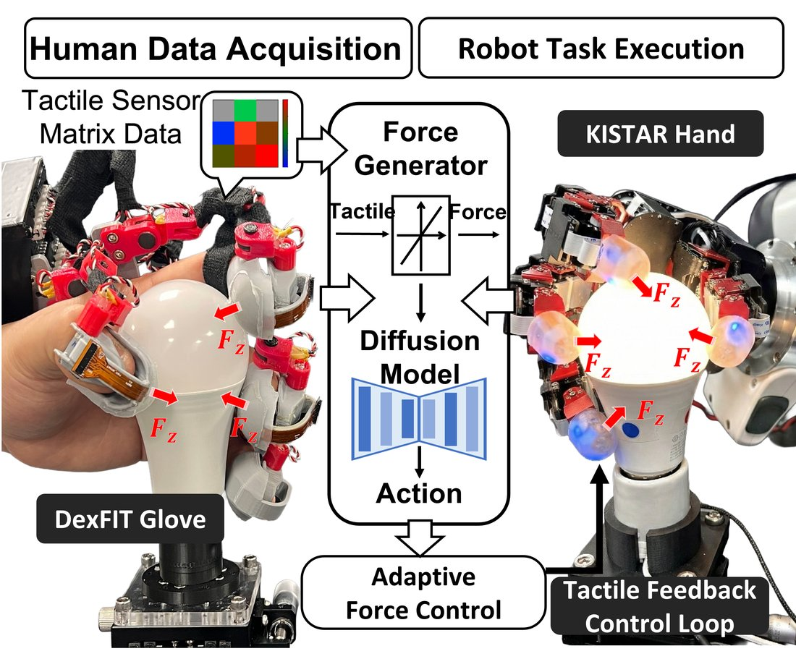
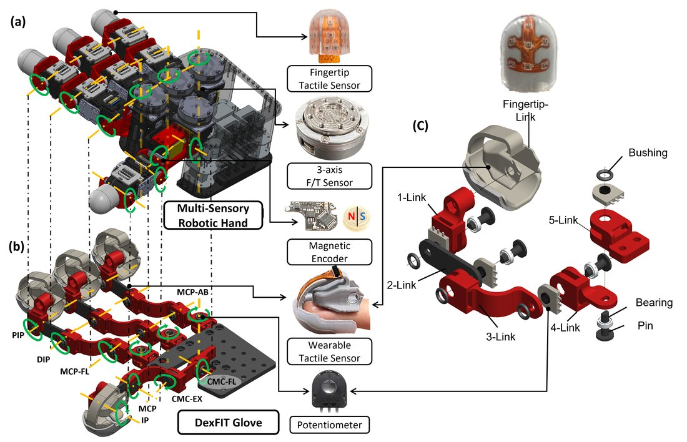
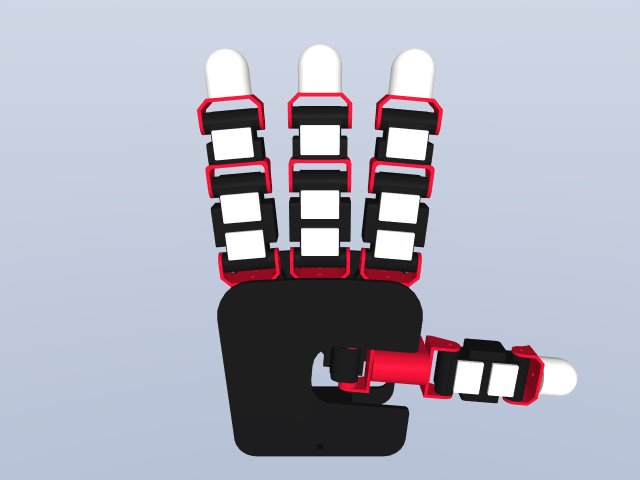
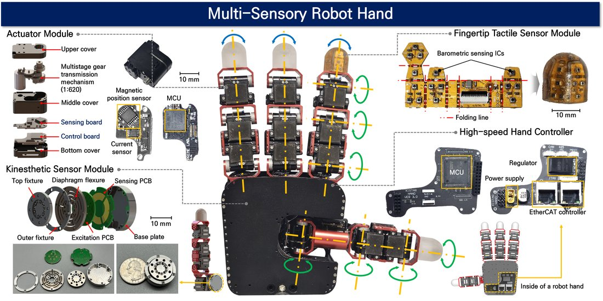

Jaesung Lee
Dexterous manipulation · tactile sensing · robot learning
Center for Humanoid Research
Korea Institute of Science and Technology
Korea University
Seoul, South Korea
I am a robotics researcher at the Center for Humanoid Research, Korea Institute of Science and Technology (KIST), and at Korea University, in Seoul, South Korea. I build the hardware and the learning systems that let multi-fingered robot hands handle contact-rich tasks, and I care about the part most pipelines throw away: force.
My work runs end to end. I design wearable tactile interfaces and instrumented robot hands, build the real-time control stack that drives them, collect demonstrations through them, and train policies on what comes out. Recent projects cover 16-DoF data gloves with barometric tactile arrays, dual-arm impedance control on Franka FR3 platforms, and vision-free diffusion policies for in-hand manipulation.
My most recent paper, DexFIT, was accepted at IROS 2026. It introduces a kinematically isomorphic tactile glove whose joint structure is mechanically identical to the target robot hand, which removes retargeting from the teleoperation pipeline entirely and transfers human contact forces to the robot in real time.
Research interests: dexterous manipulation, tactile and kinesthetic sensing, force-aware teleoperation, imitation learning for contact-rich tasks, and robot hand design.
news
| Sep 2026 | DexFIT is accepted at IROS 2026. The project page is now online. |
| Aug 2026 | Released the robot agent system for fruit manipulation — grasping, in-hand reorientation, physical-property inference and placement in a single pipeline. |
| Jun 2026 | Open-sourced KISTAR_URDF, the URDF and MuJoCo MJCF distribution of the KISTAR Hand family. |
| Jan 2026 | Started TACOS Glove — a 16-DoF data glove with 21 barometric tactile channels. |
selected publications
-

2026DexFIT: Force Informed Transfer for Dexterous Manipulation using Kinematically Isomorphic Tactile Glove AcceptedIEEE/RSJ International Conference on Intelligent Robots and Systems (IROS), 2026A 16-DoF wearable glove mechanically identical to the target robot hand removes retargeting entirely and transfers human contact forces in real time. A vision-free diffusion policy trained on the resulting force-informed data reaches 100% completion on in-hand light bulb rotation, 34.5% faster and with 16% less energy than position-only isomorphic control.BibTeX
@inproceedings{lee2026dexfit, title = {DexFIT: Force Informed Transfer for Dexterous Manipulation using Kinematically Isomorphic Tactile Glove}, author = {Lee, Jaesung and Park, Sungwoo and Hwang, Donghyun}, booktitle = {IEEE/RSJ International Conference on Intelligent Robots and Systems (IROS)}, year = {2026} }
selected projects


